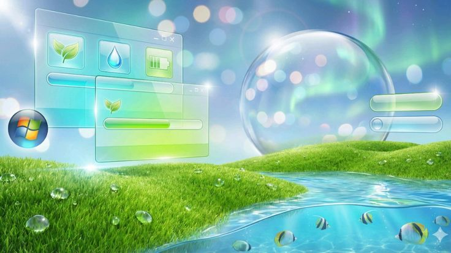
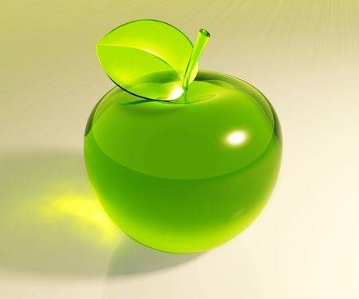
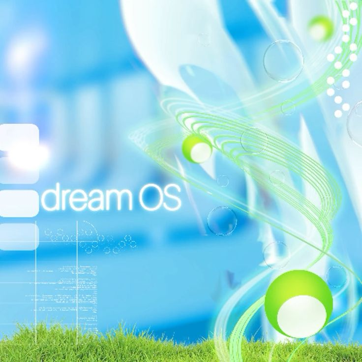
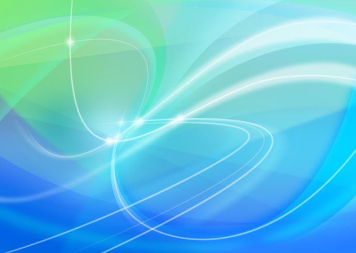
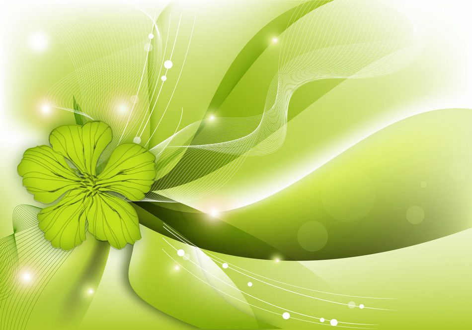
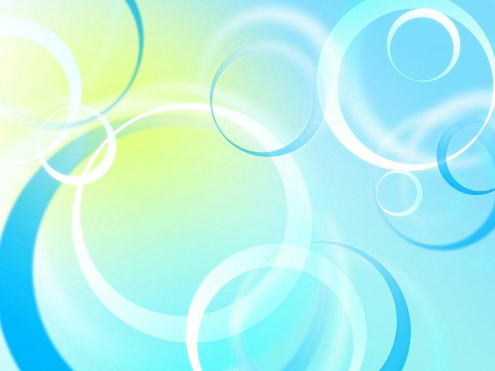
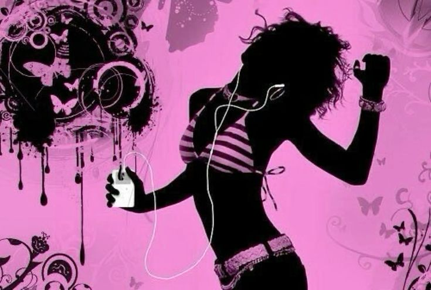
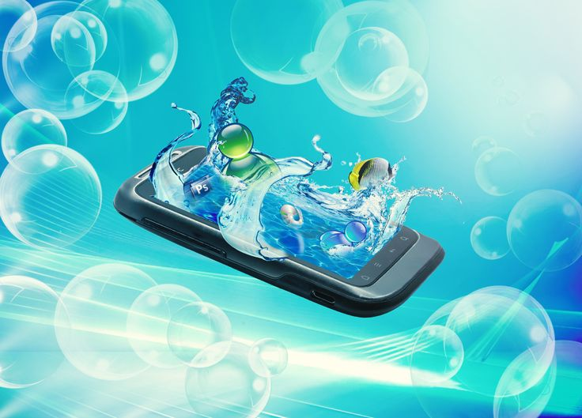

Frutiger Aero es una estética visual que dominó gran parte del diseño digital entre los años 2000 y 2010, antes de la llegada del minimalismo plano y los colores neutros. Se caracteriza por su optimismo futurista y su amor por lo digital y lo natural al mismo tiempo. Se distinguen en ella texturas brillantes, paletas de colores vibrantes (especialmente verdes y azules), y elementos inspirados en la naturaleza como cielos con nubes, peces tropicales, agua y burbujas. La estética también presenta destellos de lente, efectos bokeh, patrones de estética cyber y tech, gradientes inspirados en aurora, y el uso frecuente de la tipografía Frutiger.



Origen
El nombre "Frutiger Aero" se deriva de dos influencias clave: la tipografía Frutiger, creada por Adrian Frutiger y comúnmente utilizada en diseños de Frutiger Aero, y la interfaz de Windows Aero, introducida en Windows Vista y Windows 7, que jugó un papel significativo en la popularización de la apariencia brillante y translúcida de la estética. El término "Frutiger Aero" fue introducido en 2017 por Sofi Lee del Consumer Aesthetics Research Institute y ganó una tracción significativa en 2022, lo que llevó a un renovado interés en la estética.
Características Visuales
Las interfaces de usuario de Frutiger Aero a menudo incorporan gradientes lineales, efectos de resplandor y brillo, y un brillo satinado en muchos elementos para crear una sensación de profundidad y realismo.
Sub-estéticas
Frutiger Aero abarca una variedad de sub-estéticas y estéticas relacionadas, como Frutiger Metro, Frutiger Eco y Helvetica Aqua Aero.

